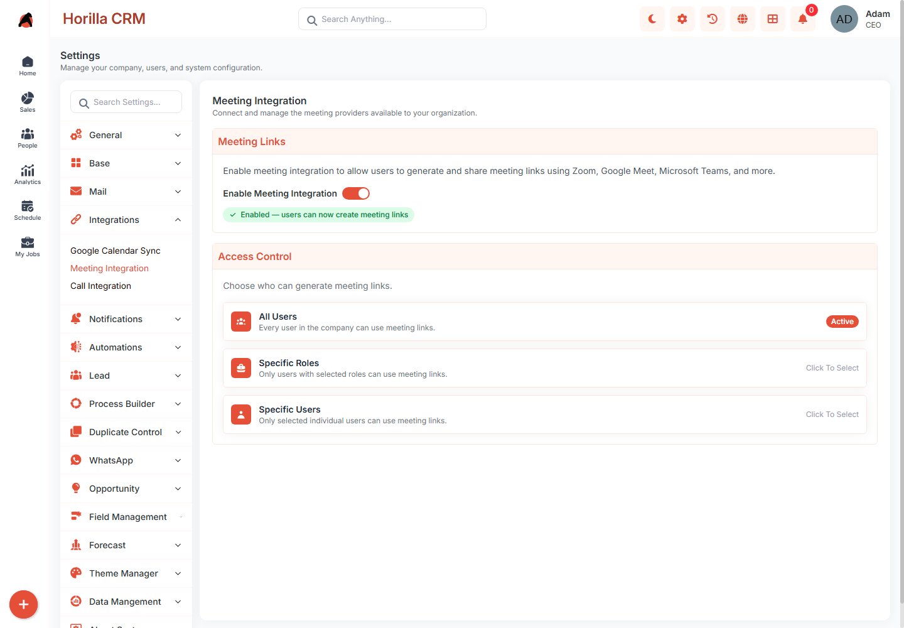

Meeting Integration
Go to Settings → Integrations → Meeting Integration. The page title
is Meeting Integration. The description is Connect and manage the meeting
providers available to your organization.
Meeting Links explains that users can generate and share links with Zoom,
Google Meet, Microsoft Teams, and more. Enable Meeting Integration is off, and
the status reads Disabled — users cannot create meeting links.
Access
Control appears while the switch is on. When it is on, the status reads Enabled
— users can now create meeting links.

Access Control
The section line is Choose who can generate meeting links.
Three cards set who may create
links. The card in use is marked Active.
- All Users — every user in the company can use meeting links. This card is Active.
- Specific Roles — only users with the selected roles can use meeting links. The card shows Click To Select.
- Specific Users — only the selected people can use meeting links. The card shows Click To Select.
